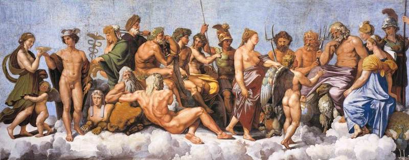

Infografía  Esta infografía muestra la línea temporal: https://www.canva.com/design/DAGoGums60M/JGvynHVaGYyBpF5RBwDvhw/edit?utm_content=DAGoGums60M&utm_campaign=designshare&utm_medium=link2&utm_source=sharebutton